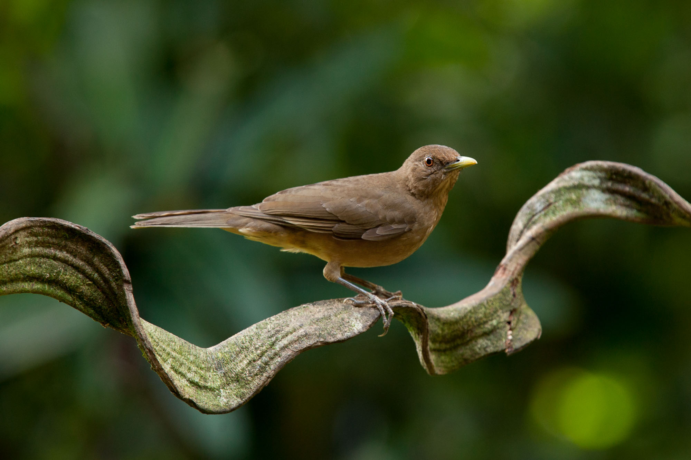
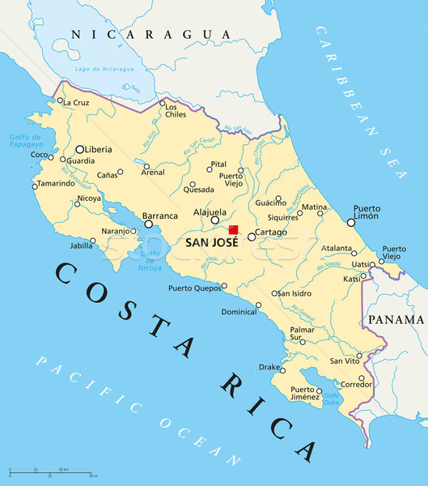
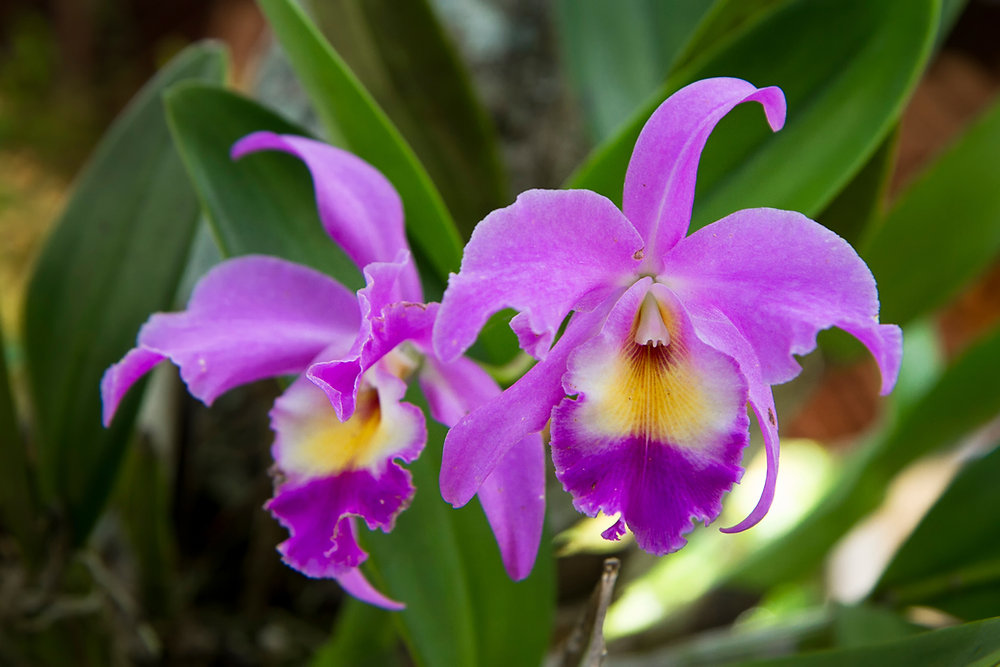
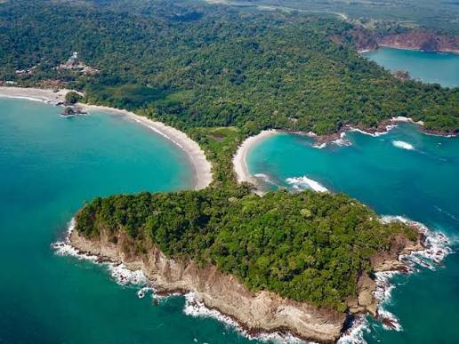

El Yigüirro

Ave nacional elegida por su potente y armonioso canto que anuncia la llegada de la época de lluvias.

Cuenta con 51,100 km² de territorio. Es reconocido mundialmente por su biodiversidad, protección ambiental y por no tener ejército desde 1948.

Ave nacional elegida por su potente y armonioso canto que anuncia la llegada de la época de lluvias.

Flor nacional y una de las orquídeas más tradicionales del país, asociada a la suerte y la belleza nativa.

Área natural protegida que combina selva tropical con espectaculares playas del Pacífico.

Famoso volcán de forma cónica casi perfecta rodeado de bosques, aguas termales y biodiversidad.